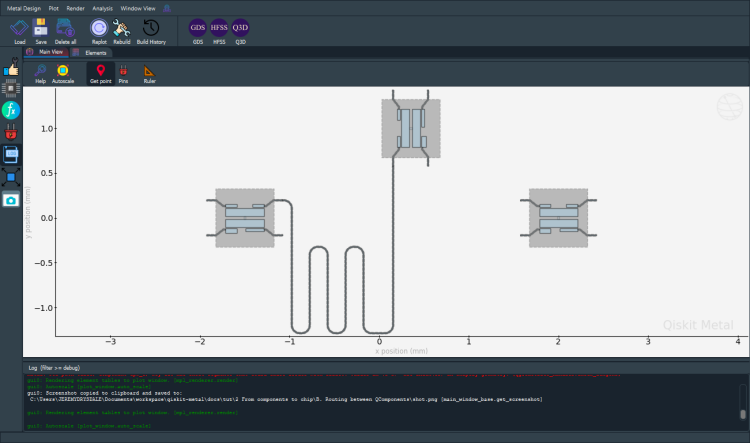
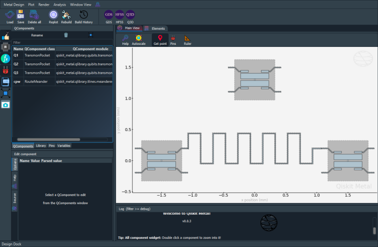

Click for Video Tutorials

|
Overview¶


Components¶
Using QComponents¶

Routing between QComponents¶




My first full quantum chip design¶


How do I make my custom QComponent¶


Renderers¶
- Introduction to QRenderers
- Note:
- To make the junction table work correctly, GDS Renderer needs the correct path to the gds file which has cells
- Answer: QGeometry tables!
- All QRenderers use the QGeometry tables to export from QDesign. Each table is a Pandas DataFrame.
- Let us look at all the polygons used to create qubit
q1 - The junction table is handled differently by each QRenderer.
- What does GDS do with “junction” table?
- Geometric boundary of a QComponent?
- Qiskit Metal Version
- Export your design to GDS
- Will export_to_gds() add to my GDS file?
- Note repeated from “Introduction to QRenderers.ipynb”:
- Connecting QPins with coplanar waveguides (CPWs) as described in earlier notebooks.
- Will export_to_gds() add datatype for Polygon and Flexpath to my GDS file.
- To make
junction tablework correctly, GDS Renderer needs a correct path to a gds file, which has cells. - If your added junctions to a qcomponent.
- What criteria will be used for identifying a short segment?
- What if a segment of LineString has few short segments?
- Answer: QGeometry tables!
- Geometric boundary of a QComponent?
- Number of vertices for linestrings.
- Changing options ‘precision’ vs ‘tolerance’ ratio can impact how fillet will look.
- What can I control by layer number?
- If you wanted cheese or no_cheese in the GDS file.
- Changing Cheesing options
- If you want a positive and/or negative masks.
- Qiskit Metal Version
- Render your design to Ansys
- How do I make my custom QRenderer
- Preparations
- Architectural insights
- QRenderer inheritance and subclass management
- TODO: Let’s tell Qiskit Metal where to find your new custom renderer
- Confirm QDesign is able to load your renderer
- Verify and modify the options of your renderer
- Populate a sample QDesign to demonstrate interaction with the renderer
- Export list of the design QGeompetries to file using your custom QSkeletonRenderer
- QRenderers can request special tool parameters from the user
- Let’s observe and update the additional properties that our QSkeletonRenderer needs
- Accessing information and methods
- Communicate state


Analysis¶
Core - EM and quantization¶
- Capacitance matrix and LOM analysis
- Eigenmode and EPR analysis
- 1. Analyze the transmon qubit by itself
- 2. Analyze the CPW resonator by itself
- 3. Analyze the combined transmon + CPW resonator system
- 4. Analyze a coupled 2-transmon system
- Impedance, admittance and scattering analysis


Analysis examples¶
- Analyzing and tuning a transmon qubit
- 1. Create the Qbit design
- 2. Analyze the transmon using the Eigenmode-EPR method
- 3. Analyze the transmon using the LOM method
- Analyzing and tuning a resonator
- 1. Create the Resonator design
- 2. Analyze the resonator using the Eigenmode-EPR method
- Analyzing and tuning a transmon qubit with a resonator
- 1. Create the Qbit design
- 2. Analyze the transmon & resonator using the Eigenmode-EPR method
- 3. Analyze the transmon using the LOM method
- Analyzing a double hanger resonator (S Param)
- CPW Kappa Calculation


Parametric sweeps¶
- Sweeps - Capacitance matrix
- READ THIS BEFORE running the cell.
- Sweeps - Eigenmode matrix
- Sweeps - Impedance, scattering and admittance (Z S Y) matrices


Hamiltonian models¶
- Plotting Wavefunctions of the Quantum Harmonic Oscillator (LC Circuit)
- Transmon Analytics: Plotting Eigenvalues as a Function of Offset Charge
- Transmon Analytics
- Modeling transmon qubit Cooper-pair box Hamiltonian in the charge basis
- Additional Analysis: Charge Dispersion, Energy Level Differences, Anharmonicity and Dephasing Time (T2)
- Qutip simulation
- Experimental
- New section on integrating sc_qubits.
- Transmon and the Oscillator


Quick Topics¶




|
|